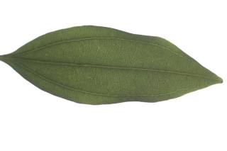
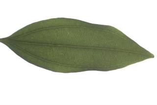

Tree, up to 8 m tall.
8 ಮೀ.ವರೆವಿಗೆ ಬೆಳೆಯುವ ಮರಗಳು.
8 മീറ്റര് വരെ ഉയരമുളള മരങ്ങള്.
மரங்கள் 8 மீ. உயரம் வரை வளரக்கூடியது
Bark smooth, grey, pustular.
ತೊಗಟೆ ನಯವಾಗಿದ್ದು, ಬೂದು ಬಣ್ಣ ಹೊಂದಿರುತ್ತದೆ ಮತ್ತು ಬೊಕ್ಕೆಗಳ ಸಮೇತ -ವಿರುತ್ತದೆ.
കുരുക്കള് നിറഞ്ഞ, ചാര നിറത്തിലുളള മിനുസമായ പുറംതൊലി.
மரத்தின் பட்டை வழுவழுப்பானது, சாம்பல் நிறமானது, நீர் கோர்த்தது போன்ற எழும்பிய அமைப்புடையது (புஸ்டுலார்).
Young branchlets angular and matured ones terete, glabrous.
ಕಿರುಕೊಂಬೆಗಳು ಕೋನಯುಕ್ತವಾಗಿರುತ್ತವೆ ಬಲಿತಾಗ ದುಂಡಾಗಿದ್ದು ರೋಮರಹಿತ -ಗಿರುತ್ತವೆ.
ഇളം ഉപശാഖകള്, കോണാകാരത്തിലും മൂത്തവ ഉരുണ്ടതുമാണ്, അരോമിലം.
சிறிய நுனிக்கிளைகள் கோணங்களுடையது மற்றும் முதிர்ந்தவைகள் குறுக்குவெட்டுத் தோற்றத்தில் வளையமானது, உரோமங்களற்றது.
Leaves simple, opposite to subopposite or alternate, spiral; petiole 1-2 cm, planoconvex in cross section, glabrous; lamina 5-7.5 x 3.5-4 cm, ovate to elliptic-ovate sometimes suborbicular, apex obtuse or obtusely shortly acuminate, base rounded to attenuate, thickly coriaceous, glabrous, glaucous; trinerved (sometimes 5-nerved) basal or suprabasal, lateral nerves not reaching the leaf tip; tertiary_nerves horizontally_percurrent; higher order nerves minutely reticulate.
ಎಲೆಗಳು ಸರಳವಾಗಿದ್ದು,ಅಭಿಮುಖದಿಂದ ಉಪಅಭಿಮುಖವರೆಗಿನ ಅಥವಾ ಪರ್ಯಾಯ ಮತ್ತು ಸುತ್ತು ಜೋಡನಾ ಮಾದರಿಯಲ್ಲಿರುತ್ತವೆ;ತೊಟ್ಟುಗಳು 1-2 ಸೆಂ.ಮೀ. ಉದ್ದವಿರುತ್ತದೆ ಮತ್ತು ಅಡ್ಡ ಸೀಳಿದಾಗ ಸಪಾಟ ಪೀನಮಧ್ಯ ಆಕಾರದಲ್ಲಿರುತ್ತವೆ; ಪತ್ರಗಳು 5-7.5 x 3.5-4 ಸೆಂ.ಮೀ.ವರೆಗಿನ ಗಾತ್ರ ಹೊಂದಿದ್ದು ಅಂಡದಿಂದ ಅಂಡವೃತ್ತ-ಅಂಡ ಕೆಲವು ವೇಳೆ ಉಪ-ದುಂಡಾಕಾದಲ್ಲಿರುತ್ತವೆ;ಪತ್ರದ ತುದಿ ಚೂಪಲ್ಲದ ಅಥವಾ ಮೊಂಡು ಚೂಪುಳ್ಳ ಕಿರಿದಾಗಿ ಕ್ರಮೇಣ ಚೂಪಾಗುವ ಮಾದರಿಯಲ್ಲಿರುತ್ತದೆ; ಬುಡ ದುಂಡಾಗಿರುವುದರಿಂದ ಒಳಬಾಗಿದ ರೀತಿಯಲ್ಲಿರುತ್ತದೆ; ಪತ್ರಗಳ ಮೇಲ್ಮೈ ದಪ್ಪವಾದ ತೊಗಲನ್ನೊಲುವ ಮಾದರಿಯಲ್ಲಿರುತ್ತದೆ ಮತ್ತು ರೋಮರಹಿತ -ವಾಗಿರುತ್ತದೆ; ಪತ್ರಗಳು 3 ಆಧಾರ ಅಥವಾ ಅಗ್ರ ಆಧಾರ ನಾಳಗಳನ್ನು ಹೊಂದಿದ್ದು ಪಾರ್ಶ್ವ ನಾಳಗಳು ಎಲೆಯ ಅಗ್ರವನ್ನು ತಲುಪುವುದಿಲ್ಲ; ಮೂರನೇ ದರ್ಜೆಯ ನಾಳಗಳು ಲಂಬ ರೇಖೆಗೆ ಸಮಕೋನದಲ್ಲಿರುತ್ತವೆ ಹಾಗೂ ಎಲೆದಿಂಡಿಗೆ ಅಡ್ಡವಾಗಿ ಕೂಡುತ್ತವೆ; ಉನ್ನತ ದರ್ಜೆಯ ನಾಳಗಳು ಸೂಕ್ಷ್ಮ-ಜಾಲಬಂಧ ನಾಳ ವಿನ್ಯಾಸದಲ್ಲಿರುತ್ತವೆ.
ലഘുവായ ഇലകള്, സമ്മുഖം തൊട്ട് ഉപസമ്മുഖം വരെയാകാം, ചിലപ്പോള് ഏകാന്തരവും, സര്പ്പിളവുമാണ്; ഛേദത്തില് ഒരുഭാഗം പരന്നും മറുഭാഗം ഉരുണ്ടുമിരിക്കുന്ന ഘടനയുളള, അരോമിലമായ ഇലഞെട്ടിന് 1 സെ.മീ തൊട്ട് 2 സെ.മീ വരെ നീളം; പത്രഫലകത്തിന് 5 സെ.മീ മുതല് 7.5 സെ.മീ വരെ നീളവും 3.5 സെ.മീ മുതല് 4 സെ.മീ വരെ വീതിയും, ആകൃതി അണ്ഡാകാരംതൊട്ട് ദീര്ഘവൃത്തീയ അണ്ഡാകാരം വരെയാവാം, ചിലപ്പോള് ഉപവൃത്താകാരമാവാം, പത്രാഗ്രം ഉപകോണാകാരമോ ഉപകോണാകാരത്തിലുളള ചെറുദീര്ഘാഗ്രമോ ആണ്, പത്രാധാരം വൃത്താകാരം തൊട്ട് നേര്ത്തവസാനിക്കുന്നതാവാം, കനത്ത ചര്മ്മില പ്രകൃതമാണ്, അരോമിലം, നീലരാശി കലര്ന്നതാണ്; ആധാരമായോ അപആധാരമായോ ഉളള മൂന്ന് ഞരമ്പുകളുളളതാണ് (ചിലപ്പോള് 5 ഞരമ്പുകള്), പാര്ശ്വസിരകള് പത്രാഗ്രത്തിലെത്താത്തവയാണ്, തിരശ്ചീന പെര്കറന്റ് വിധത്തിലുളള ത്രിതീയ ഞരമ്പുകള്; മറ്റ് ചെറുഞരമ്പുകള് സൂക്ഷ്മജാലിതമാണ്.
இலைகள் தனித்தவை, எதிரடுக்கம் முதல் கிட்டதட்ட எதிரடுக்கம் போன்றவை, அல்லது மாற்றுஅடுக்கமானவை, சுழல் போன்று அமைந்தது; இலைக்காம்பு 1-2 செ.மீ., நீளமானது, பிளேனோகான்வக்ஸ், உரோமங்களற்றது; இலை அலகு 5-7.5 X 3.5-4 செ.மீ. சிலசமயங்களில் வட்டவடிவானது (ஆர்பிகுலேட்), அலகின் நுனி மழுங்கியது அல்லது சிறிய அதிக்கூரியதுடன் மொட்டையான முனையுடையது, தடித்த கோரியேசியஸ், அலகின் கீழ்பரப்பு உரோமங்களற்றது மற்றும் மெழுகு பூசியது போன்றது அல்லது சாம்பல் கலந்த நீல நிறமானது (க்களாக்கஸ்)போன்றது, மூன்று நரம்புகளை (சிலசமயங்களில் 5 நரம்புகளை) அலகின் தளத்தில் அல்லது அதற்கு சற்று மேல் அமைந்தது, பக்கநரம்புகள் இரண்டும் அலகின் நுனி வரை செல்லாதது; மூன்றாம் நிலை நரம்புகள் விளிம்பை நோக்கிய கிடைமட்டத்தில் இணையான பெர்க்கரண்ட்; மற்ற சிறு நரம்புகள் நெருக்கமான வலைப்பின்னல் போன்றது.
Inflorescence axillary, and pseudoterminal panicles, generally up to 8 cm long, few flowered.
ಪುಷ್ಪಮಂಜರಿ ಸಾಧಾರಣವಾಗಿ 8 ಸೆಂ.ಮೀ. ವರೆಗಿನ ಉದ್ದ ಹೊಂದಿದ್ದು,ಅಕ್ಷಾಕಂಕುಳಿನ ಮತ್ತು ಹುಸಿ-ತುದಿಯಲ್ಲಿನ ಕೆಲವು ಹೂಗಳನ್ನೊಳಗೊಂಡ ಪುನರಾವೃತ್ತಿಯಾಗಿ ಕವಲೊಡೆಯುವ ಮಾದರಿಯದಾಗಿರುತ್ತದೆ .
ഏതാനും പൂക്കള് മാത്രമുളള, സാധാരണയായി 8 സെ.മീ വരെ നീളമുളള പൂങ്കുലകള് കക്ഷീയമോ കപടഉച്ഛസ്ഥമോ ആയ പാനിക്കിള് ആണ്.
மஞ்சரி இலைக்கோணங்களில் மற்றும் கிட்டதட்ட தண்டின் நுனியில் காணப்படும் பேனிக்கிள், 8 செ.மீ. வரை குறைந்த எண்ணிக்கையில் மலர்கள் கொண்டது.
Berry, ellipsoid, up to 1.5 cm long; fruiting_perianth_cup fleshy, obconical with basal remnants lobes; seed 1.
ಬೆರ್ರಿಗಳು ಅಂಡವೃತ್ತದ ಆಕಾರದಲ್ಲಿದ್ದು 1.5 ಸೆಂ.ಮೀ.ವರೆಗಿನ ಉದ್ದ ಹೊದಿರುತ್ತವೆ; ಕಾಯಿಗಳ ಪುಷ್ಪಾವರಣದ ಬಟ್ಟಲು ಮಾಂಸಲವಾಗಿರುತ್ತದೆ ಮತ್ತು ತಲೆಕೆಳಗಾದ ಶಂಖುವಿನ ಆಕಾರದಲ್ಲಿದ್ದು ತಳಭಾಗದಲ್ಲಿ ಶಾಶ್ವತವಾದ ದಳಗಳ ಸಮೇತವಿರುತ್ತವೆ ಹಾಗೂ ಒಂದು ಬೀಜವನ್ನೊಳಗೊಂಡಿರುತ್ತವೆ.
ഒറ്റവിത്തുളള കായ, അപകോണാകാരത്തിലുളള കര്ണ്ണങ്ങളുടെ കീഴ്ഭാഗത്തിന്റെ അവശേഷിപ്പുകളുളള, 1.5 സെ.മീ വരെ നീളമുളള മാംസളമായ ഫലബാഹ്യദള കപ്പുളള ദീര്ഘവൃത്തീയ ബെറിയാണ്.
முழுச்சதைகனி (பெர்ரி), நீள்வட்ட வடிவானது, 1.5 செ.மீ. வரை நீளமானது; கனியிலுள்ள நிரந்தரமான ப்பீரியான்ந்த் கோப்பை போன்றது, சதைப்பற்றானது, தலைக்கீழ் கூம்பு வடிவானது, அதன் இதழ்கள் நிரந்தரமானது, விதை ஒன்றுடையது.
 
